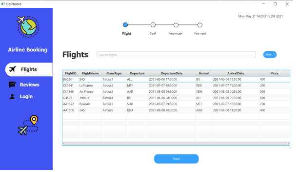
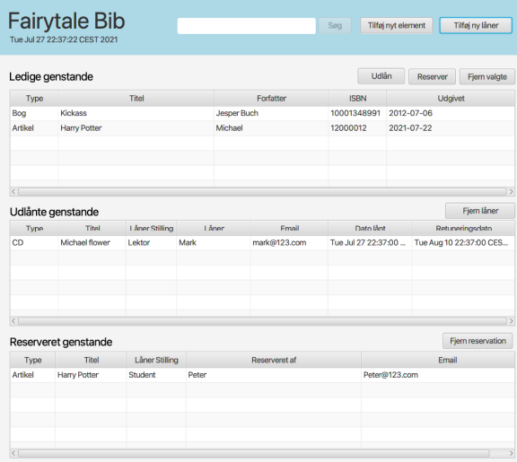

Udvalgte Projekter
✈️ Airline Booking System
Et digitalt flybookingsystem udviklet i Java. Brugere kan logge ind, vælge sæder, betale og modtage billetter automatisk via PDF og e-mail. Systemet er bygget med Java RMI, PostgreSQL og følger MVVM-arkitektur. Jeg var ansvarlig for UI, databaseintegration og klient/server-kommunikation.
🍻 John Bull Pub Bookingsystem
Et bordbookingsystem udviklet til en lokal pub for at erstatte manuelle Facebook-reservationer. Jeg arbejdede med systemarkitektur, databasedesign og udvikling af kernefunktioner som bordvalg og samtidighedsstyring. Projektet blev gennemført med Java og SQL i et agilt setup.
📱 Biblioteks projekt
Systemet er bygget som en single client-applikation i Java og anvender MVVM-arkitektur for at sikre en tydelig separation mellem logik og brugergrænseflade. Data gemmes og indlæses automatisk som binære filer ved hjælp af Java I/O.
